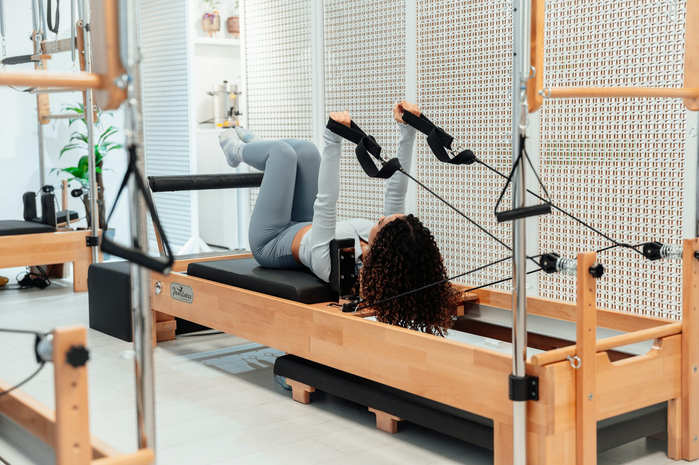

Curated reads
05/28/25
Sofia Marquez
Mastering the Art of Fitness: A Comprehensive Approach to Well-Being
This article explores a holistic approach to fitness, offering insights on exercise, nutrition, and mental wellness to help you cultivate a sustainable lifestyle.
03/06/25
The Art of Staying Motivated: Your Guide to a Successful Fitness Journey
Learn how to maintain motivation throughout your fitness journey with practical tips, strategies, and insights for lasting success.
03/23/25
Liam Thompson
The Rise of Virtual Fitness: How Technology is Transforming Workouts
An exploration of the growing trend of virtual fitness, its benefits, and how technology is reshaping the way we approach our workouts.
06/10/25
Oliver Thompson
Hydration and Performance: The Ultimate Guide for Athletes
This article explores the critical role of hydration in athletic performance, offering tips and insights on maintaining optimal fluid balance.
01/01/25
Sophia Martinez
Mastering Your Fitness Journey: A Comprehensive Approach
This article provides a detailed guide to mastering your fitness journey by focusing on goal setting, workout diversity, nutrition, and mental resilience.

12/25/24
Sophia Martinez
Sustainable Living: Embracing Eco-Friendly Practices for a Greener Future
This article explores the concept of sustainable living, highlighting practical strategies to reduce environmental impact and promote a healthier planet.